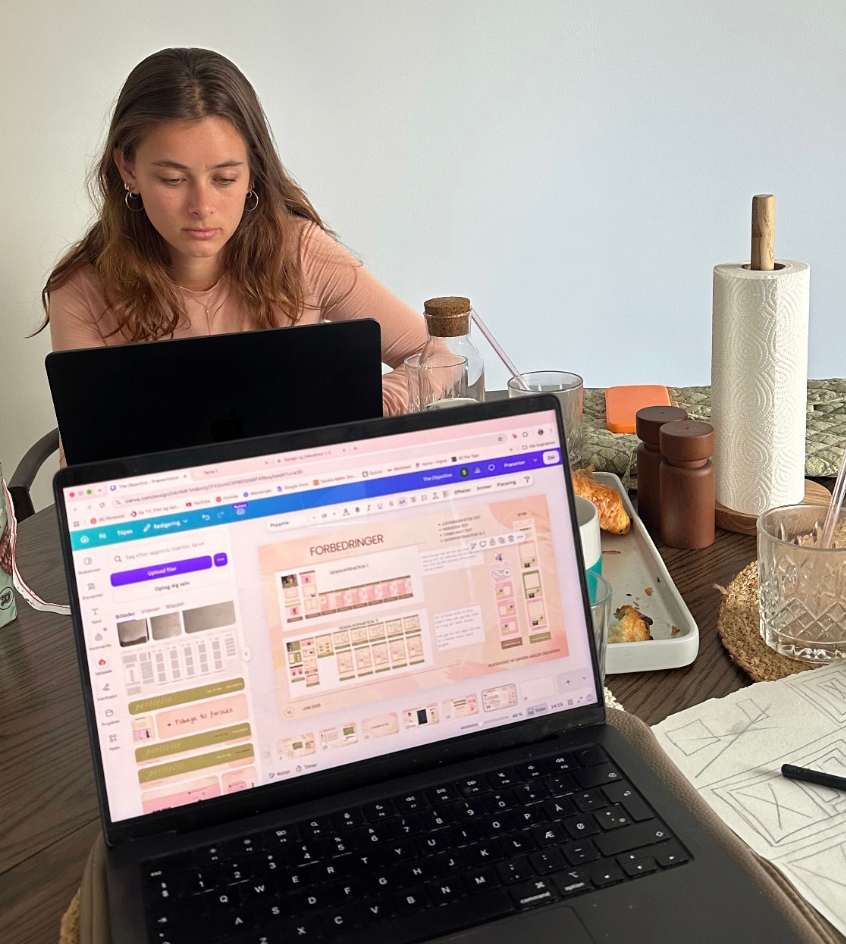
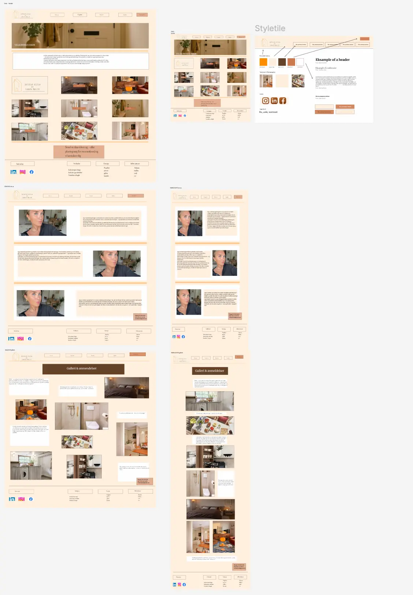
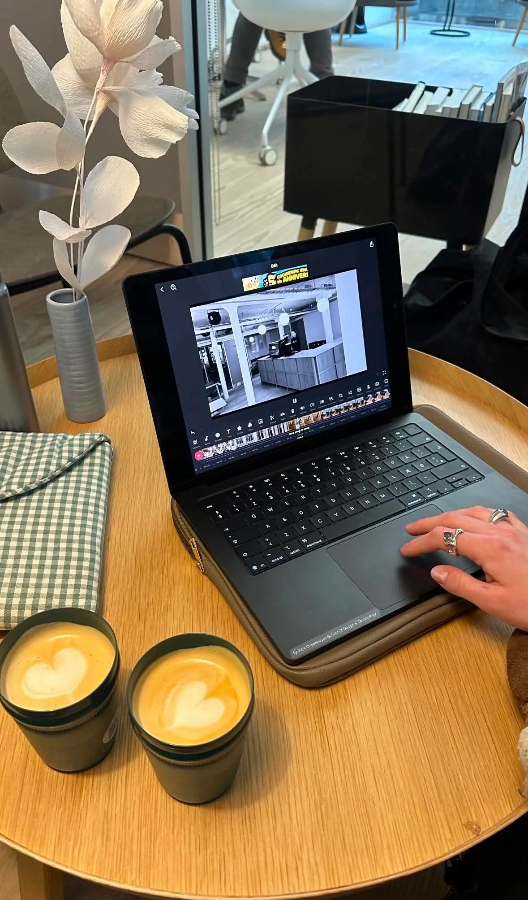
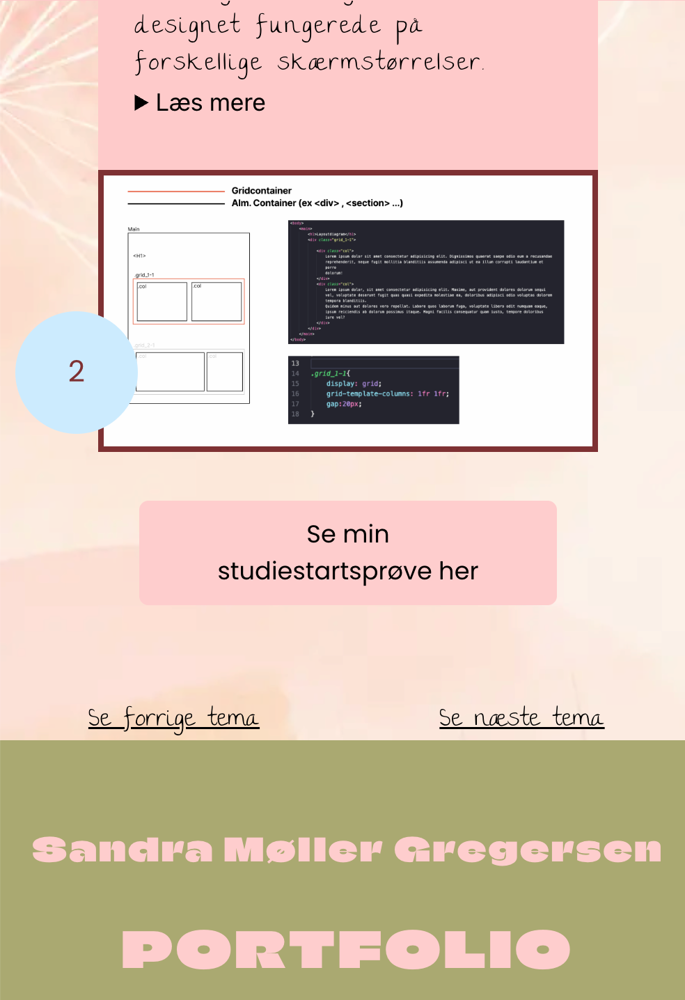
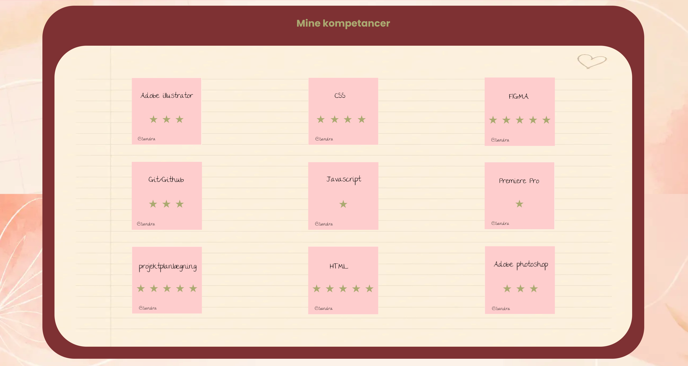

Et kreativt fundament
men ikke et fast!
Mit studie på Multimediedesign har givet mig et stærkt fundament inden for digitalt design, brugeroplevelser og webudvikling. Gennem undervisningen har jeg arbejdet med designprocesser, UX/UI-design, HTML, CSS og JavaScript, samtidig med at jeg har opnået en forståelse for, hvordan æstetik og funktionalitet går hånd i hånd. Studiet har lært mig at tænke kreativt, men også analytisk, så hver løsning tager udgangspunkt i både brugerens behov og projektets formål. Jeg ser uddannelsen som en mulighed for hele tiden at udfordre mig selv, udvikle nye kompetencer og omsætte teori til praksis gennem konkrete projekter.

Fra idé til digital løsning
Hvor kreativitet bliver omsat til funktion
Noget af det, jeg sætter størst pris på ved uddannelsen, er den kreative proces og den udvikling,
der
sker undervejs.
Jeg motiveres af at tage en idé fra de første tanker og research til skitser, prototyper og den
færdige digitale
løsning. Hvert projekt giver mig mulighed for at udforske nye idéer, eksperimentere med forskellige
designløsninger og
finde den bedste vej frem gennem afprøvning og refleksion.
Undervejs lærer jeg at arbejde
struktureret med designprocessen, tage imod feedback og løbende forbedre mine løsninger.
Jeg oplever, hvordan selv små justeringer kan have stor betydning for brugeroplevelsen, og hvordan
et gennemtænkt design
skabes gennem mange bevidste valg – ikke tilfældigheder.
For mig handler godt design ikke
kun
om det færdige resultat, men om hele rejsen dertil. Det er i processen, at idéer
udvikler sig, udfordringer bliver til muligheder, og kreative tanker bliver omsat til brugervenlige
digitale oplevelser
med et klart formål. Det er netop denne kombination af kreativitet, struktur og problemløsning, der
gør multimediedesign
så spændende for mig.


Se mit eksamensprojekt
Til eksamen fik vi til opgave at lave et portfolio site, som skulle indeholde hvad vi havde lært under hele 1. semester. Her er det tydeligt at se min udvikling, som kun lige er begyndt.
Mit eksamensprojekt fra 1. semester markerede begyndelsen på min rejse som multimediedesigner. Projektet gav mig mulighed for at samle de kompetencer, jeg havde opbygget gennem semesteret, og omsætte dem til en samlet digital løsning med fokus på både design, brugeroplevelse og funktionalitet. Her arbejdede jeg med hele designprocessen – fra research og idéudvikling til prototype, kodning og det endelige produkt. Projektet blev en vigtig milepæl, hvor jeg oplevede, hvordan teori og praksis går hånd i hånd.
Se mit eksamensprojekt

Kontakt mig her


Kun begyndelsen
Jeg møder nye opgaver med engagement, nysgerrighed og en positiv indstilling.
Selvom jeg kun er på 2. semester, ser jeg allerede, hvor meget jeg har udviklet mig – både fagligt og personligt. Hvert projekt har styrket min forståelse for design, udvikling og samarbejde, og jeg oplever, at min nysgerrighed kun vokser i takt med, at jeg lærer mere.
Jeg ser frem til de kommende semestre, hvor jeg får mulighed for at fordybe mig yderligere i
UX/UI-design,
frontend-udvikling og digitale brugeroplevelser.
For mig er studiet ikke kun en
uddannelse, men
starten på en karriere,
hvor jeg ønsker at fortsætte med at udvikle mig, udfordre mig selv og skabe løsninger, der gør en
forskel.